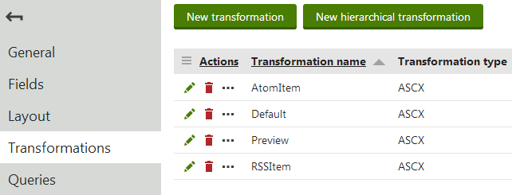
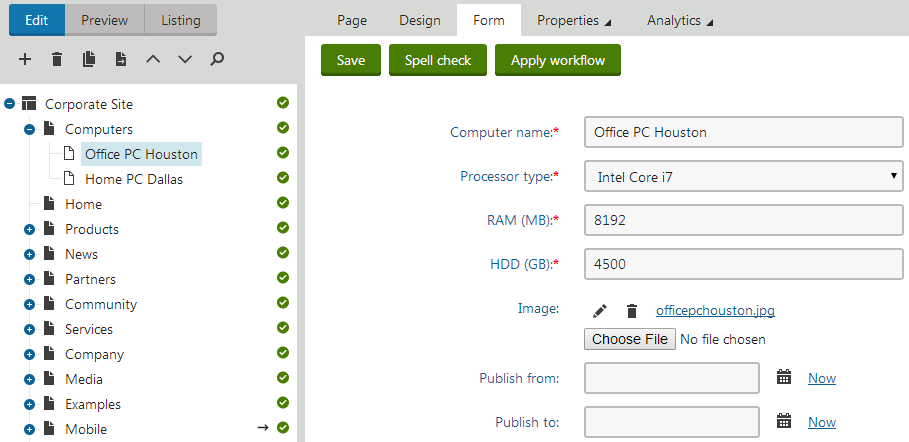
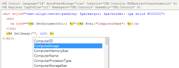
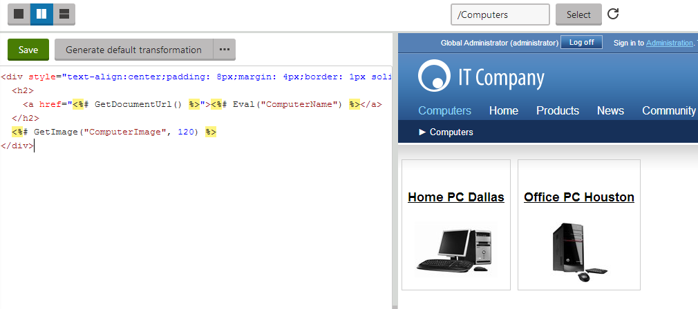
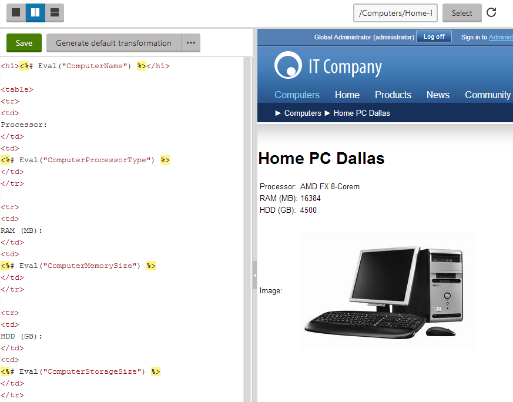

Creating transformations for pages
This page demonstrates how to write transformations for a sample Computer page type. See Creating page types for instructions on how to create page types.
Storing transformations
Typically, transformations are stored under the page type they are meant to display. However, there are situations in which you may want to create more general transformations to share by different page types. You can create a special Container page type for this purpose.
Managing transformations
Open the Page types application.
Edit (
 ) a page type.
) a page type.Open the Transformations tab.
This is the main management interface for the transformations of a given page type.

Editing the Computer document type - viewing the list of available transformations
Example - Creating a transformation for a specific page type
This example uses a specific (Computers) page type. See Creating page types if you want to create a page type that uses the same fields. You can apply the information here to other page types as well.
Creating default page type transformation
Open the Page types application.
Edit the Computer page type.
See how you can create the page type this example works with.
Switch to the Transformations tabs.
Click New transformation.
Enter Preview as transformation name.
Save.
Create another transformation in the same way and name it Default.
Preparing the source pages
Before you can use the transformations, you first need to add some computer pages to the website.
Open the Pages application, select the root of the website and click New (
 ).
).Select the Page (menu item) page type.
Type in Computers as the Page name and select the Create a blank page template option.
Click Save to create the page.
Switch to the Design tab of the new page and add a Datalist web part into zoneA.
Set the following property values for the Datalist web part:
Page types: custom.computer; you can choose the page type from a list by clicking the Select button.
Transformation: custom.computer.preview; to easily choose from a list of available transformations, click Select, choose the Computer page type in the dialog and then click on the required transformation.
Selected item transformation: custom.computer.default
Click OK to insert the web part.
The web part will display the data of computer pages on the page according to the specified transformations. For now, the page is empty because there are no pages of the custom.computer type on the website.
Click New (
) with the Computers page selected and choose the Computer page type.The page displays an editing form with the fields of the computer page type.
Enter the following values:
Computer name: Home PC Dallas
Processor type: AMD FX 8-Core
RAM (MB): 16384
HDD (GB): 4500
Image: Upload an image from your local disk.
Click Save and create another and enter the following values for the second computer page:
Computer name: Office PC Houston
Processor type: Intel Core i7
RAM (MB): 8192
HDD (GB): 4500
Image: Upload another image.
Click Save.

Creating computer documents
Editing transformations
The way the Computers pages display data is determined by its transformations. You can fully customize the data format by modifying the code of the transformations through the main interface in the Page types application. The Pages application also allows you to edit transformations, which is more convenient in many cases. As you will often want to make changes to transformations when you are actually displaying the data. Let's see how you can do that now:
In the Pages application, return to the Edit mode and open the Design tab of the Computers page.
Configure (double-click) the Datalist web part, scroll down to the Transformation property and click Edit.
The editing dialog of the custom.computer.Preview transformation opens. The Datalist web part uses this transformation for displaying data when listing computer entries.
Enter the following code:
<divstyle="text-align:center;padding: 8px;margin: 4px;border: 1px solid #CCCCCC"><h2><ahref="<%# GetDocumentUrl() %>"><%# Eval("ComputerName") %></a></h2><%# GetImage("ComputerImage", 120) %></div>Because this is an ASCX type transformation, the code is similar to standard ItemTemplates that you may already be familiar with from using ASP.NET Repeater or DataList controls. It combines HTML with ASP.NET commands and data binding expressions. You may also use the built-in transformation methods that simplify various tasks.
Notice the code used to create the link to specific pages. It consists of a standard HTML link tag and inserts the appropriate URL and link text dynamically:
<a href="<%# GetDocumentUrl() %>"><%# Eval("ComputerName") %></a>You can generate an image tag containing the file uploaded into the given page's ComputerImage field using the GetImage method. The sample code calls the method with a parameter that ensures automatic server‑side resizing of the image's longest side to 120 pixels:
<%# GetImage("ComputerImage",120) %>When writing ASCX transformations, you often need to specify the names of data fields as parameters of the Eval data binding expression or other methods, such as ComputerName and ComputerImage in the example above. You can either type the names manually, or press the CTRL + SPACE key combination to access a list of available page fields and related objects.

Viewing the list of available data fieldsBy clicking an item in the list or by selecting it and pressing enter, you can insert the item to the current cursor position in the code. The specific fields of the given page type are prioritized at the top.
Click Save to apply the changes in the code.
Click Preview to see how the transformation affects the page.
This opens a split view that allows you to check the appearance of the web part directly while editing the transformation code.

Previewing the list transformation for computer pagesClose the Edit transformation dialog and click Edit next to the custom.computer.default transformation in the Selected item transformation property.
This transformation defines the output that the Datalist shows to users viewing the details of computer pages.
Enter the following code:
<h1><%# Eval("ComputerName") %></h1><table><tr><td>Processor:</td><td><%# Eval("ComputerProcessorType") %></td></tr><tr><td>RAM (MB):</td><td><%# Eval("ComputerMemorySize") %></td></tr><tr><td>HDD (GB):</td><td><%# Eval("ComputerStorageSize") %></td></tr><tr><td>Image:</td><td><%# GetImage("ComputerImage") %></td></tr></table>Click Save.
The web part applies the Selected item transformation when one of the displayed pages is the currently active page, e.g., when a visitor clicks on the link in the titles of the computers on the Computers page. To see how the detail view looks like for a specific computer page, enter /Computers/Home-PC-Dallas into the path textbox on the preview bar and Refresh ( ) the page section.

Edit transformation dialog - previewing transformation output while editing the transformation's code
If you close the configuration dialogs and view the Computers page on the live website, you can see that both the list of computers and the details pages of individual computer pages are rendered according to the new data format.
You have learned how to write ASCX transformations for displaying the content of structured pages. Other types of transformations may be used in the same way, only with different transformation code syntax.
Note: If you wish to use XSLT transformations, you need to display the data through the XSLT viewer or Universal page viewer web parts (or CMSViewer server control).
Transformations for multilingual websites
You may need to display different text in transformations based on the currently selected language. If you are using the built-in multilingual support, you can achieve this by creating a separate transformation for each language, using the appropriate culture code as a suffix in the transformation name.
Example:
English (default language) transformation code name: cms.news.detail
French transformation code name: cms.news.detail_fr-fr
When a user switches the content culture to French, web parts and controls automatically load the French version of the transformation.